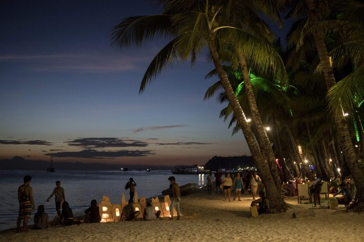
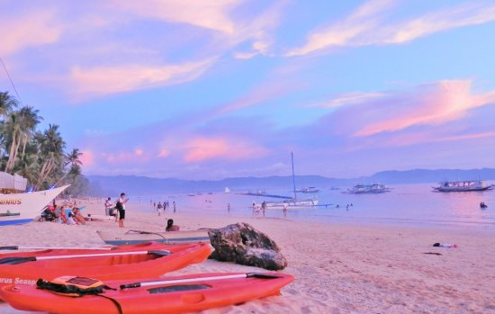
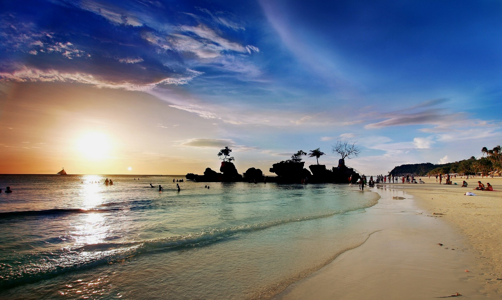

你可能很難想像，完全封閉一個觀光勝地會是多麼嚴重影響經濟效益的舉動，
因為光是在2017年，長灘島的遊客就超過200萬人次，
台灣去年也有4萬人次造訪。菲律賓政府表示，
他們已利用觀光關閉期，建立新的排水系統，
同時間還拆除非法建造的飯店、旅社，並懲罰相關環境汙染行為；
而在固體廢物管理、林地和地役權恢復、可交換的土地管理、
道路和運輸開發、保護生物多樣性、
濕地恢復和地質災害管理等，也多已有建樹。

這段期間，政府已承諾提供約4800萬美元的財政援助，
這當中有一些金額是用來補貼觀光停滯的空窗期。
雖然這個政策引起了當地居民的憤怒指責，甚至還引發了一連串的連署和抗議，
因為當地大多數居民都從事旅遊業，儘管只是替大財閥工作，
擔任清潔工、房務、經營餐館或販賣紀念品，但沒有遊客就等於大半年沒有生計。

然而，歷經了半年的重整，這些員工也蓄勢待發地期待新氣象的到來。
重新開放後的長灘島，將做出許多以往都沒有的限制：
1、無論何時，島上最多只能停留1萬9000名遊客和1萬5000名員工。
2、嚴格禁止所有海灘派對，吸菸、飲酒完全禁止，還有以前猖獗的活動。
3、島上1萬2000家住宿營業單位僅有一半允許每天開放，以確保不要有太多遊客的狀況發生。
第一頁
第二頁
第四頁
心得